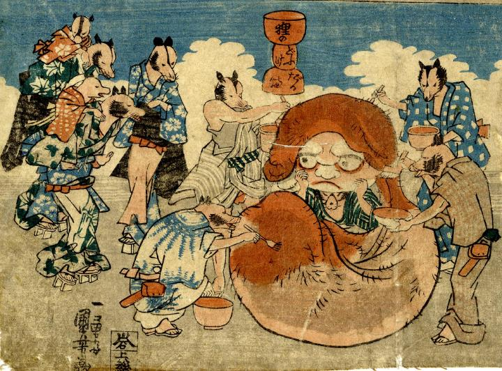

陰嚢をかぶった狸。周りの狸がこれを達磨に仕立てようと赤く塗り、顔を書き加えている。
著作者：一勇斎国芳／出典：親書誌：U426_nichibunken_0259：狸の小金玉狸のどふけだるま；タヌキノコキンタマタヌキノドウケダルマ／日付：2011／資源識別子：U426_nichibunken_0259_0002_0000
Copyright (c)2010- International Research Center for Japanese Studies, Kyoto, Japan. All rights reserved.